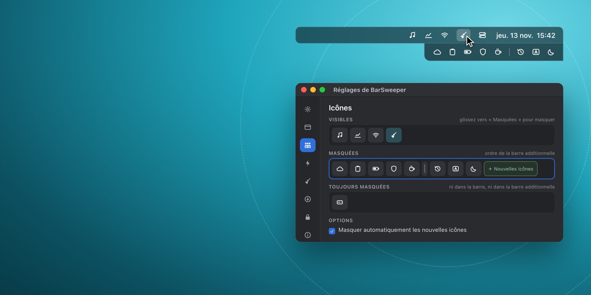

BarSweeper
La barre des menus, enfin respirable.
Les icônes dont vous n'avez pas besoin en permanence quittent la barre. Elles reviennent au survol, ou d'un raccourci, dans une barre additionnelle. L'écran à encoche a son propre réglage.
Télécharger macOSEn savoir plus →